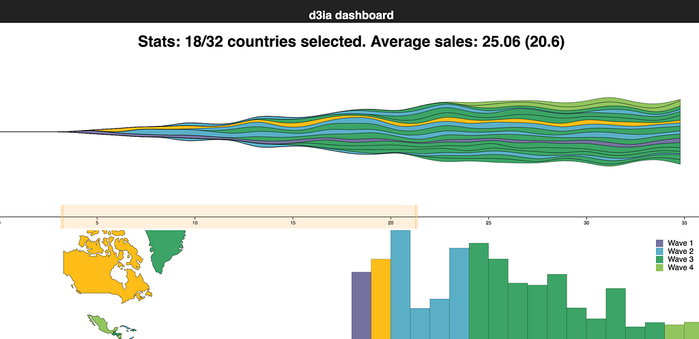
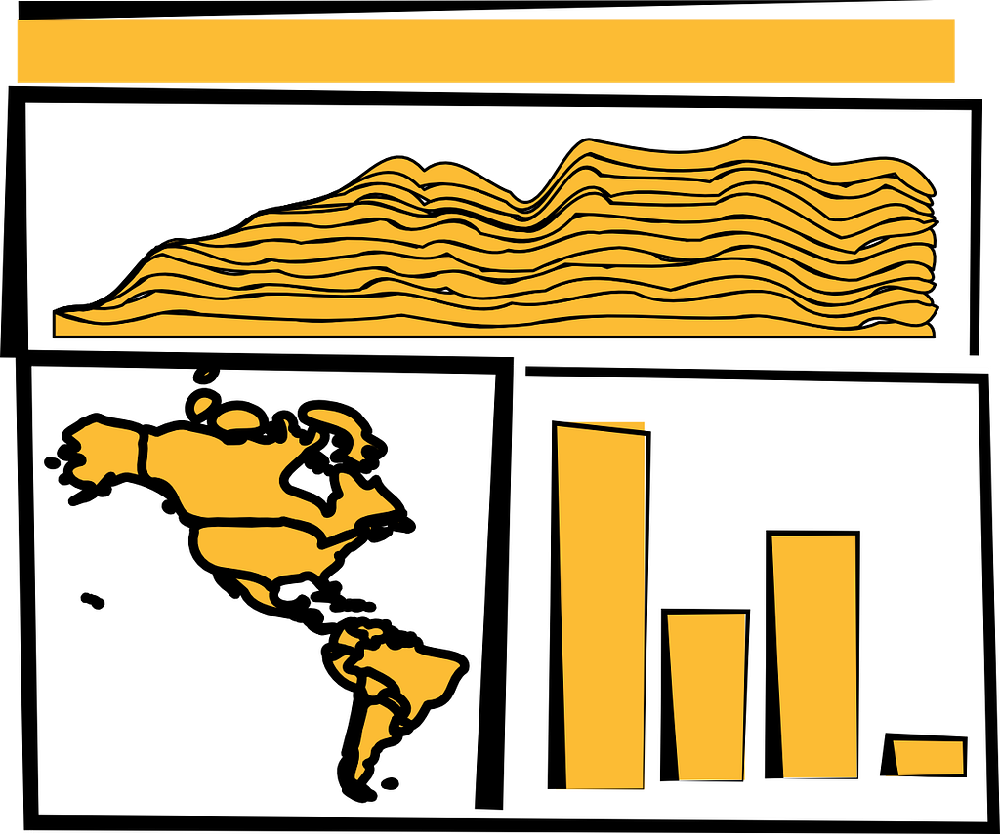
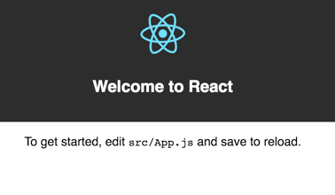
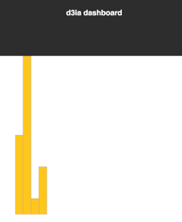
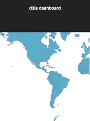

Bringing together D3.js and React is one of those things that isn’t new but is still not well-established enough to point to one sure way to do it. In this excerpt from my book D3.js in Action, Second Edition, I’ll show you the main techniques for combining React and D3 and explain their strengths and weaknesses. The code for this example can be found in the React chapter code on D3.js in Action’s repo.

We start with a design for our dashboard. Designs can be rough sketches or detailed sets of user requirements. Let’s imagine you work for the leading European online seller of table mats, MatFlicks, and you’re in charge of creating a dashboard showing their rollout to North America and South America. The genius CEO of MatFlicks, Matt Flick, decided the rollout strategy would be alphabetical, so Argentina gets access on Day 0 and every day one more country gets access to the amazing MatFlicks inventory. They need to see how the rollout is progressing geographically, over time and in total per country. The figure below shows a simple sketch to achieve this using several of the charts I explore throughout D3.js in Action. We’re going to randomly generate MatFlicks data, with each country only generating random data in billions of dollars of revenue per day after its rollout.
With a data dashboard like this, we want to provide a user with multiple perspectives into the data as well as the ability to drill down into the data and see individual datapoints. We’ll use a line chart to see the change over time, a bar chart for raw total changes, and a map so that users can see the geographic distribution of our data. We also want to let users slice and dice their data — functionality that is readily achieved using a brush.

From the sketch, you can easily imagine interaction possibilities and changes that you may want to see based on user activity; for instance, highlighting which elements in each chart correspond to elements in other charts, or giving more detail on a particular element based on a click. That kind of dynamic filtering and interactivity is explored in the full chapter. The CSS for the dashboard isn’t much for this example, just the fill and stroke for the map we’ll make. As with most data visualization, much of the styling will be inline.
Dashboard CSS
path.countries {
stroke-width: 1;
stroke: #75739F;
fill: #5EAFC6;
}
Getting started with React
React is a view lifecycle management system that’s part of a very popular application framework and development pattern. React is the view layer, and lets you define HTML components with custom behavior, which is super useful for composing applications. It uses a JavaScript + HTML language called JSX that disgusted me when I first saw it, but now I love it. I didn’t like it because I always felt like JavaScript and HTML should live in totally separate worlds, but I found out later that writing HTML inside JavaScript could be incredibly useful when you’re manipulating the DOM like we have been with vanilla D3 throughout this book.
Typically when you see examples of React, they pair it with a kind of state management system like Flux or Redux. We won’t be doing that in this chapter. This is a single chapter, and you can find entire books about React.
You’re going to need node and node package manager (npm) installed on your system as well as a slight amount of comfort with the command line. There are great books on React, such as React Quickly, so this will only scratch the surface, but just this chapter will get you to the point of a fully self-contained React data visualization application.
Why React, why not X?
React is obviously the best library ever made and if you like Angular, you’re dumb, bro (and don’t even get me started on Ember). No, not really. That’s horrible, and it’s too bad that people get so invested in the righteousness of their particular library.
Actually, I just wanted to show people how to deal with D3 in a modern MVC-like environment and I know React best. Even if you never use React, you’ll probably see patterns in this chapter that apply to other frameworks. And even if you hate application frameworks, you can use most of the code in this chapter in your own custom, hand-rolled, beautifully opaque bespoke dashboard.
Fundamentally, React consists of a component creation framework that lets you build self-contained elements (like div or svg:rect) that have custom rendering methods, properties, state, and lifecycle methods.
Render
One of the major features of React is that it keeps track of a copy of the DOM, known as the Virtual DOM, which it can use to only render elements that need to change based on receiving new data saving cycles and speeding up your web applications. This was React’s big selling point when it first dropped, but it’s become popular with other view rendering systems. The render() function in each React component returns the elements that will be created by React (typically described using JSX, which is introduced in this chapter).
Props
Attributes of a component are sent to it when it’s created and are known as props. These props of a React component are typically available in the component functions via the this context as this.props. In certain cases, such as stateless components or constructors, you won’t use this to access them, but we won’t do that in this chapter so you’ll need a book dedicated to React to get to know the other patterns. This structure lets you send data down from parent components to child components and you can use that data to modify how the component is rendered. You’ll see this in detail when we get into the code.
State
While props are sent down to a component, the state of a component is stored and modified internally within the component. Like this.props, there’s a corresponding this.state that will give you the current state. When you modify state (using this.setState in a component) it will automatically trigger a re-render unless you’ve modified shouldComponentUpdate (a lifecycle method dealt with in the next section).
Lifecycle methods
React components expose lifecycle methods that fire as the component is created and updated and receives its props. They are incredibly useful and even necessary in certain use cases, as we’ll see later. You have, for instance, shouldComponentUpdate, which lets you specify the logic for whether or not the component re-renders when it receives new props or state. There’s also willComponentUpdate and didComponentUpdate to add functionality to your component before or after it updates, along with similar methods for when the component first mounts or exits (and a few more). I’ll get into these methods as they apply to our data visualization needs but I won’t touch on all of them.
react-create-app: setting up your application
One of the challenges of modern development is getting your environment set up. Fortunately, there’s a command line tool that gets you started and it’s supported by the React team: create-react-app
In OSX you can open your terminal window and run the following commands:
npm install -g create-react-app
create-react-app d3ia
cd d3ia/
npm start
Setting up your React app is that easy. If you navigate to localhost:3000 you’ll see the boilerplate create-react-app page below. If you have any issues or need instructions for Windows, see https://github.com/facebookincubator/create-react-app.

Along with starting your node server running the code, this will create all the structure you need to build and deploy a React application that we’re going to use it to build our dashboard. That structure contains a package.json file that references all the modules included in your project and to which we need to add a couple more modules to make our dashboard. We add modules using NPM and while we could include the entire D3 library and keep coding like we have, you’re better off installing the individual modules and understanding how importing those modules works. In your project directory run the following to install the d3-scale module:
npm i –SE d3-scale
This command (npm i is short for npm install) installs the latest version of d3-scale (which gives us access to all those wonderful scales we’ve been using in the last eight chapters) and the –SE tag saves the exact version to your package.json so that when you want to deploy this application elsewhere d3-scale is installed. Along with d3-scale, do the same thing with the following modules:
d3-shape
d3-svg-legend
d3-array
d3-geo
d3-selection
d3-transition
d3-brush
d3-axis
By installing modules individually like this, you reduces the amount of code you’ll deploy with your application, decreasing load time and improving maintainability.
JSX
JSX refers to JavaScript + XML, an integrated JavaScript and HTML coding language that lets you write HTML inline with your JavaScript code. It requires that the code be transpiled to plain JavaScript — your browser can’t natively run JSX — but as long as you have your transpiling set up (which react-create-app already does for us) you can write code like this:
const data = [ 'one', 'two', 'three' ]
const divs = data.map((d,i) => <div key={i}>{d}</div>)const wrap = <div style={{ marginLeft: '20px' }}className='wrapper'>{divs}</div>And you can create an array of three div elements, each of which will have the corresponding string from your array as content. Notice a few things going on here. One, when we start writing in HTML we have to use curly braces (bolded for emphasis above) to get out of it if we want to put js there. If I hadn’t put curly braces around the d, for instance, then all my divs would have had the letter “d” as their content. Another is that style is an object passed to an element and that object needs CSS keys that usually are snake case (like margin-left) turned into camelcase (marginLeft). When we’re making an array of elements, each needs a “key” property that gives it a unique key (like the optional key when we’re using .data() with D3). Finally, when you want to set an element’s CSS class, you need to use className, because class is reserved.
There’s more to JSX but that should be enough to let you make sense of the code you’re going to see. When I first saw JSX, I was convinced it was a horrible idea and planned to only use the pure JavaScript rendering functions that React has (you don’t need to use JSX to use React), but after a couple weeks, I fell in love with it. The ability to create elements on the fly from data really appealed to me because of my experience with D3.
Traditional D3 rendering with React
The challenge of integrating D3 with React is that React and D3 both want to control the DOM. The entire select/enter/exit/update pattern with D3 is in direct conflict with React and its virtual DOM. If you’re coming to React from D3, giving up your grip on the DOM is one of those “cold, dead hands” moments. The way most people use D3 with React is to use React to build the structure of the application, and to render traditional HTML elements, and then when it comes to the data visualization section, they pass a DOM container (typically an <svg>) over to D3 and use D3 to create and destroy and update elements. In a way, it’s similar to the way we used to use Java applets or Flash to run a black box in your page while the rest of your page is rendered separately. The benefit of this method of integrating React and D3 is that you can use all the same kind of code you see in all the core D3 examples. The main difficulty is that you need to create functions in various React lifecycle events to make sure your viz updates.
The listing below shows a simple bar chart component built using this method. Create this component in your src/ directory and save it as BarChart.js. In React, component filenames and function names are typically differentiated from other code files and functions by using camelcase and capitalizing the first letter like this.
BarChart.js
import React, { Component } from 'react'
import './App.css'
import { scaleLinear } from 'd3-scale’
import { max } from 'd3-array'
import { select } from 'd3-selection'class BarChart extends Component {
constructor(props){
super(props)
this.createBarChart = this.createBarChart.bind(this)
} componentDidMount() {
this.createBarChart()
} componentDidUpdate() {
this.createBarChart()
} createBarChart() {
const node = this.node
const dataMax = max(this.props.data)
const yScale = scaleLinear()
.domain([0, dataMax])
.range([0, this.props.size[1]])select(node)
.selectAll('rect')
.data(this.props.data)
.enter()
.append('rect')
select(node)
.selectAll('rect')
.data(this.props.data)
.exit()
.remove()
select(node)
.selectAll('rect')
.data(this.props.data)
.style('fill', '#fe9922')
.attr('x', (d,i) => i * 25)
.attr('y', d => this.props.size[1] — yScale(d))
.attr('height', d => yScale(d))
.attr('width', 25)
}
render() {
return <svg ref={node => this.node = node}
width={500} height={500}>
</svg>
}
}
export default BarChartA few explanations about what’s going on in the code here:
- Because we’re importing D3 functions from modules, they don’t have the d3. prefix, instead they’re the imported function like scaleLinear.
- In the constructor, you need to bind the component as the context to any new internal functions if you want access to this.props or this.state in that function (this doesn’t need to be done for any existing lifecycle functions) .
- By executing this.createBarChart in componentDidMount and componentDidUpdate, whenever the component first mounts or receives new props/state fire the bar chart function.
- this.node is set in the ref property of the svg element and acts as a reference to the actual DOM node generated by React, so you can hand that DOM node over to your D3 functionality.
- size and data are passed down as props to the component, so you access them with this.props.size and this.props.data to your D3 code.
- Render is just returning an SVG element waiting for your D3 code. Below we’ll see how to use React to generate the entire chart.
Making these changes and saving them won’t show any immediate effect because you’re not importing and rendering this component in App.js, which is the component initially rendered by your app. Change App.js to match the following listing.
Referencing BarChart.js in App.js
import React, { Component } from 'react'
import './App.css'
import BarChart from './BarChart'class App extends Component {
render() {
return (
<div className='App'>
<div className='App-header'>
<h2>d3ia dashboard</h2>
</div>
<div>
<BarChart data={[5,10,1,3]} size={[500,500]} />
</div>
</div>
)
}
}export default App
The changes here are that we’re importing our newly created component (BarChart.js) and we’re passing down some data and size to that component (that’s how we’re accessing it on props.data and props.size in createBarChart).
When you save App.js with these changes, you’ll see something pretty cool if you have your server running: it automatically updates the page to show you what’s in the figure below. That’s Webpack — the module bundler included in create-react-app — automatically updating your app based on changes in your code.

You can already imagine improvements like scaling the bars to fit the width, which we’ll see later. But for now let’s move on to the other method of rendering data visualization using D3 and React.
React for element creation, D3 as the visualization kernel
Rather than using ref to get the actual DOM node and passing that DOM node off to D3, you can use D3 to generate all the necessary drawing instructions and use React to create the actual DOM elements. There are challenges with this approach in creating animated transitions and draggable elements but otherwise it’s preferable because it will create code that will be more maintainable by your less D3-inclined colleagues.
The code below shows how we can do this to recreate one of the maps made in the geospatial data visualization chapter of D3.js in Action. In this example we import geographic data (in this case world.js) instead of loading geodata like traditional examples show. That’s done by transforming the geojson .js file by adding a little ES2015 export syntax to the beginning of the JSON object (you can see the code on the github repo). The code in the next listing is similar to what we’ve seen before, except now we’re using it to create JSX elements to represent each country and we’re including the geodata rather than using an XHR request.
WorldMap.js
import React, { Component } from 'react'
import './App.css'
import worlddata from './world'
import { geoMercator, geoPath } from 'd3-geo'
class WorldMap extends Component {
render() {
const projection = geoMercator()
const pathGenerator = geoPath().projection(projection)
const countries = worlddata.features
.map((d,i) => <path
key={'path' + i}
d={pathGenerator(d)}
className='countries'
/>)
return <svg width={500} height={500}>
{countries}
</svg>
}
}
export default WorldMap
Rather than fiddling with async calls (using d3.json for instance) we can just import the map data since it won’t be changing. I think it’s better to transform any static assets to .js and import them rather than use XHR requests. We use native Array.map to map the arrays to svg:path elements and populate the d attribute of each of those path elements using D3’s geo functionality. That array of paths is just dropped into some curly brackets inside the svg and that’s all there is to creating a choropleth map in React with D3. It’s almost exactly the same as the data-binding pattern we see in D3, except that we use native Array.map to map the individual data elements to DOM elements because of the magic of JSX.

In my own practice I prefer to use this method, because I find the lifecycle events in React as well as the way it creates and updates and destroys elements to be more comprehensive than dealing with it via D3. And as React and other frameworks like it mature, the issues with developing interactivity and animation become less and less difficult.
In chapter 9 of D3.js in Action this example continues with the addition of a streamgraph, brush, responsive sizing and more. But this shows you the two main ways to approach integrating D3 and React.